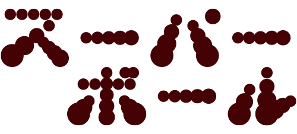
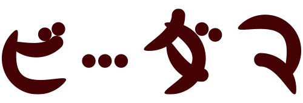
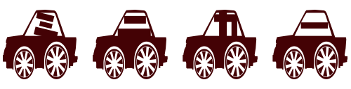

CONCEPT
コンセプト
60年以上続いた昭和時代の古いモノ、懐かしいモノは、 以前から「昭和レトロ文化」として若者に注目されてきました。
2021年5月にリニューアルオープンした「西武園ゆうえんち」の目玉が、「昭 和の商店街」の再現であることが話題になったように更なる注目を集めている 「昭和レトロ文化」は、日本の文化を象徴する情緒豊かなものであると感じます。
「昭和レトロ文化」には、街並みやファッション、製品など様々なジャンルが ある中で、私は「昭和のあそび」に魅力を感じ、モチーフに選びました。 「昭和レトロ文化」を調べていく中で、看板に使われている文字、ポスターに 使われている文字には、手書きのような温かみを感じる昭和レトロな特徴があ ると考えました。そこでレトロ文化の中でも、作品を見た人がどこか懐かしさ を感じ、少し愛着が湧くものをキーワードにレトロなフォントを制作しました。
FONT COLLECTION
フォントの紹介
昭和な雰囲気を表すために、日本で古来から使用されてきた文字のカタカナの 50音(現在はほとんど使われなくなったとエを抜き、撥音を追加した46音) を4種類を昭和時代に発売、流行したあそびを基にフォントを制作しました。
ルービックキューブ、レインボースプリング、スライム、ジグソーパズルの4種類です。

ルービックキューブ （タイルフォント）
概要 昭和55年頃に大流行した。一辺が5.5cm 程度の立方体で、各面は異なる6色で構成されている。基本の形は各面、3×3の9マスに分割されている。
フォント ルービックキューブは 8×8 のグリッドに対して四角形をタイル状に配置して制作しました。

レインボースプリング （スプリングフォント）
概要 昭和62年頃流行。鉄、プラスチックをバネ状に加工した玩具。ユニークな動きをするのが特徴。大きさはロングサイズ、ミニサイズ等があり、通常の丸型の他に、星型やハート型もある。
フォント レインボースプリングはバネの伸びている雰囲気を出すために縦に長く制作しました。

スライム （プルプルフォント）
概要 昭和53年頃流行。小さなポリバケツを模した容器に収められている。緑色の半固形の物体で、手につかない程度の適度な粘性と冷たく湿った感触がある。触って遊ぶ。人に新鮮な感覚をもたらした。
フォント スライムはプルっとした印象を与える為に丸い膨らみを意識して制作しました。

ジグソーパズル （パズルフォント）
概要 昭和49 年頃、「モナ·リザ展」が社会的流行となった影響で、ジグソーパズルが流行した。前年頃から輸入されていた「モナ·リザ」のジグソーパズルも売れ、ジグソーパズルの日本での普及の先駆者となった。
フォント ジグソーパズルはパズルの凸部分と凹部分をモチーフにピースっぽく制作しました。
MOTIF ARCHIVE
その他
モチーフの文字だけをフォントにしました。

概要 昭和40年頃、アメリカから輸入。非常に弾力があるため、大きく跳ねるのが特徴。球の色は非常に鮮やかで中におもちゃが入っているものもある。
概要 昭和8年頃、再流行した。昭和45年頃に飲料の販促品をきっかけにした第三次ブームが起こり昭和55年頃にドラマをきっかけとした第四次ブームが起こった。
概要 コマには様々な種類があり、一般的な投げコマ、上部がほぼ平らで金属製の対戦型コマのベーゴマ、回すと逆さまに立つ逆立ちコマと流行ったものが多い。

概要 ガラス玉が炭酸飲料に使用されたことをきっかけに普及した。昭和8年頃、お菓子屋でビーダマ単体が商品として販売された。ビーダマ同士をぶつけてあそぶ。

概要 昭和34年頃、ミニカーが市場に出回り始め、昭和52年頃にスーパーカーが大流行した。昭和55年には、チョロQが発売された。
概要 昭和33年頃にアメリカで大流行したことを受けて、東京都のデパートで一斉に販売が開始された。直径1m程度のプラスティック製の輪。腰や腕を振って回転させる。
概要 昭和27年頃、流行した食用玩具はフーセンガムをおもちゃに包装し、食品としてコンビニでおもちゃを販売するために生まれたとされる。